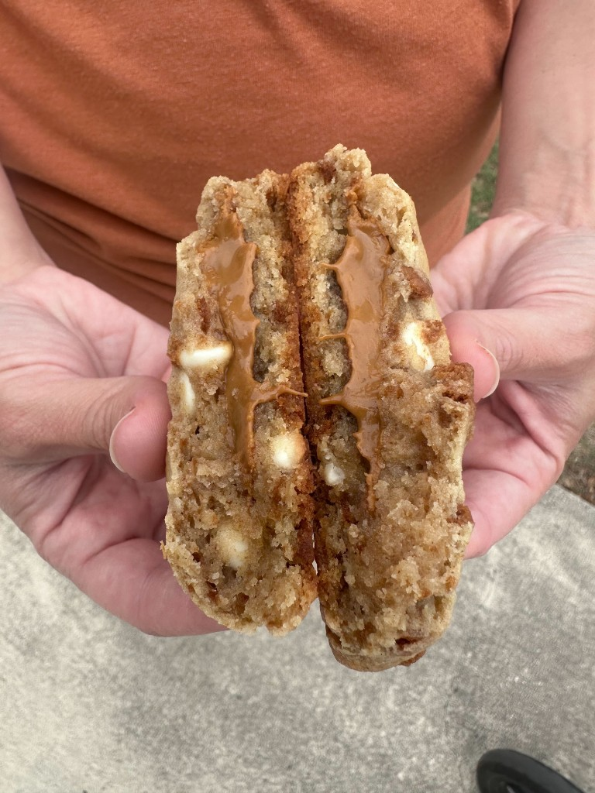

Artisan sourdough cookies and bread
DSHS Cottage License: #12165
Small-batch sourdough cookies and bread from a home kitchen — mixed, fermented, and baked by hand.
Have allergies or questions? Reach out by email anytime.
I’m not taking custom orders just yet, but the cookies are available at Compass Bible Church coffee shop! Open every day 8am–4pm.
Email caitlins.cottage.kitchen@gmail.com
This kitchen is licensed under Washington’s cottage food rules (DSHS Cottage License #12165). Products are made in a home kitchen that is not subject to the same inspections as a commercial facility.